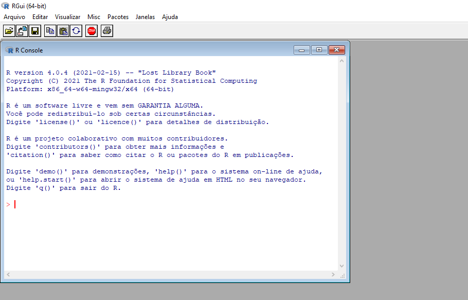
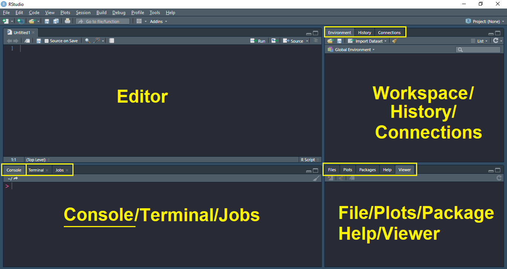

Capítulo 10 Primeiros Passos em R
10.1 Introdução
R permite que especialistas interpretem, interajam e visualizem dados de forma rápida e fácil
Antes de inicializar qualquer projeto aplicado através da linguagem computacional R, é importante entender um pouco sobre esta ferramenta, e para isto é necessário destacar que o \(\texttt{R}\) é um ambiente para análise de dados. Básicamente é uma linguagem, e pode ser entendida também como um projeto de código aberto, isto é, um projeto cujos códigos estão disponíveis para seu livre descarregamento sem custo nenhum, pemitindo a qualquer pessoa utilizá-los.
A linguagem \(\texttt{R}\) surgiu no começo da década de 90, e foi inicialmente concebida por Robert Gentleman e Ross Ihaka, na época, ambos professores de Departamento de Estatística da Universidade de Auckland, na Nova Zelândia, e especialistas em dados. Desde 1997, o projeto \(\texttt{R}\) é gerenciado pelo \(\texttt{R}\) Core Group, sendo feito seu primeiro lançamento em fevereiro de 2000. O trabalhos que tiveram o uso intensivo da linguagem envolviam o mapeamento das tendências sociais e de marketing on-line, passando pelo desenvolvimento de modelos financeiros e globando também modelos climáticos para fomentar o desenvolvimento da economia e a sociedade. Assim, muitas das visualizações impactantes de dados e análises estatísticas que são performadas na atualidade por pesquisadores, estatísticos e cientistas de dados podem certamente estarem usando a linguagem \(\texttt{R}\) para estes propósitos.
Diversos contribuidores do Core Group continuaram no desenvolvimento e aprimoramento do \(\texttt{R}\), dando surgimento a novas ferramentas e aplicativos, acumulando alto volume de pacotes (package, no inglês) criadas pelos usuários com o intuito de aprimorar a funcionalidade do \(\texttt{R}\) em diversas áreas. A validação da qualidade desses pacotes se dá através de especialistas e líderes reconhecidos em todos os campos, contando com um suporte via crowdsourcing. Adicionalmente, a linguagem \(\texttt{R}\) se destaca por ser interativa, orientada a objetos e funções, onde os objetos podem ser conjuntos de dados, vetores, funções, matrizes etc, e cujas manipulações podem ser cálculos, entradas e saídas de dados, análises estatísticas e gráficos
10.2 Instalando o R
No intuito de auxiliar no processo de download do software, é importante entender que ela é feita \(\texttt{R}\) através do CRAN (Comprehensive R Archive Network), sendo uma rede de servidores que se encontra distribuída ao redo do mundo, contendo as diversãs e idénticas versões dos códigos e documentações da linguagem de forma atualizada.
Para fazer download do software, inicialmente selecione a CRAN https://cran.r-project.org/ do seu país e em seguida a cidade mais próxima a você.
+ Para o caso do Rio de Janeiro, selecione a CRAN Oswaldo Cruz Foundation, Rio de Janeiro, ou acesse [`http://cran.fiocruz.br/`](http://cran.fiocruz.br/)10.2.1 Passo a passo da instalação
Após escolher a CRAN, selecione o link de download compatível com seu sistema operacional, o \(\texttt{R}\) se encontra disponível para Linux(Debian, Fedora/Redhat, Ubuntu), macOS e Windows.
Clique no link ‘install R for the first time’.
Por fim, selecione ‘Download R X.X.X for Windows’, ou seja, a versão mais atual disponível.
Uma vez realizado o download, clique duas vezes no arquivo que foi descarregado e siga as instruções da instalação padrão.
Qualquer dúvida sobre a instalação ou demais, visite a página de perguntas frequentes:
http://cran.r-project.org/doc/FAQ/R-FAQ.html.
Após executar toda a instalação corretamente, o software pode ser acessado pelo Menu Iniciar (Sistema Windows) ou pelo ícone na sua área de trabalho. Na seguinte Figura está a interface de comando que deverá aparecer quando iniciar o \(\texttt{R}\),

10.3 Instalando o \(\texttt{RStudio}\)
O \(\texttt{RStudio}\) é um ambiente de desenvolvimento integrado (IDE) aberto e free para o software \(\texttt{R}\). Seu principal objetivo é facilitar a integração entre o \(\texttt{R}\) e o usuário, sendo uma interface user-friendly. O \(\texttt{RStudio}\) é desenvolvido na linguagem de programação C++ e está disponível para diversos sistemas operacionais, tais como: Microsoft Windows, Mac OS X e GNU/Linux. Antes da instalação do \(\texttt{RStudio}\) é prioritário ter feito a instalação do \(\texttt{R}\).
10.3.1 Passo a passo para a instalação \(\texttt{RStudio}\)
Acesse no site oficial do \(\texttt{RStudio}\): http://www.rstudio.org
Clique no menu Products (OPEN SOURCE Get started with R) \(\rightarrow\) RStudio
Descenda na página e selecione RStudio Desktop
Escolha o link de acordo com o seu sistema operacional
Instale o programa a partir do arquivo salvo
Uma vez instalado o software pode ser acessado pelo Menu Iniciar (Sistema Windows) ou pelo ícone na sua área de trabalho tendo o seguinte layout que conta com 4 quadrantes:

Esses quadrantes representam o editor, o console, o workspace e o output. O padrão e organização vem nesse formato e ordem, mas você pode ter uma disposição diferente priorizando suas preferências do formato, para isto acesse no menu Tools na opção Global options na seção do painel esquedo: Pane Layout. Os dois principais paineis do \(\texttt{RStudio}\) são o editor e o console.
Editor/Scripts: painel onde são escritos os códigos, o cujo espaço pode ser guardado, sendo aextensão do arquivo “.R” Assim como o layout pode ser ajustado, as cores do texto dos códigos também podem ser ajustadas facilitando a sua leitura (Siga o caminho: Tools \(\rightarrow\) Global optios \(\rightarrow\) Appearance).
Console: é o painel onde os códigos são rodados e onde também são fornecidas a maioria das saídas.
Os demais painéis são auxiliares. O objetivo deles é facilitar pequenas tarefas que fazem parte tanto da programação quanto da análise de dados, como olhar a documentação de funções, analisar os objetos criados em uma sessão do \(\texttt{R}\), procurar e organizar os arquivos que compõem a nossa análise, armazenar e analisar os gráficos criados e muito mais.
- Environment: painel com todos os objetos criados na sessão.
- History: painel com um histórico dos comandos rodados.
- Files: mostra os arquivos no diretório de trabalho. É possível navegar entre diretórios.
- Plots: painel onde os gráficos serão apresentados.
- Packages: apresenta todos os pacotes instalados e carregados.
- Help: janela onde a documentação das funções serão apresentadas.
- Viewer: painel onde relatórios e dashboards serão apresentados.
10.4 Usando o \(\texttt{RStudio}\) Cloud
Uma alternativa do \(\texttt{RStudio}\) é o \(\texttt{RStudio}\) Cloud, permitindo o uso on-line do \(\texttt{R}\) e do \(\texttt{RStudio}\). O \(\texttt{RStudio}\) Cloud se destaca por ser um serviço do \(\texttt{RStudio}\), com algumas restrições para o seu uso gratuito, mas oferecendo opções de planos para a expasão dos serviços e a possibilidade trabalhos colaborativos conjuntos. Umas grandes vantagens do \(\texttt{RStudio}\) Cloud é o seu armazenamento na nuvem no servidor de todos os projetos criados (incluindo todos os arquivos \(\texttt{R}\)). Além disso, você pode acessar aos arquivos/projetos em qualquer lugar, independentemente do computador que você estiver usando e a qualquer hora.
Para poder acessar ao \(\texttt{RStudio}\) Cloud de forma gratuita, siga os seguintes passos:
Acesse em: https://rstudio.cloud/plans
Selecione o plano gratuito (Campo: Cloud \(\rightarrow\) Free)
Seleccione
Para logar, pode ser usado o seu e-mail ou escolher entre a conta Google ou GitHub.
Ao acessar na página do \(\texttt{RStudio}\) Cloud a página que aparece é a seguinte:
Logando no \(\texttt{RStudio}\) Cloud
Uma vez que você fizer o login na sua conta, será direcionado pelo sistema para criar o nome da sua conta:
Criando um projeto no \(\texttt{RStudio}\) Cloud
Posteriormente, será direcionado para os seus projetos, ali é só criar um novo projeto clicando no botão New Project:
Interface do \(\texttt{RStudio}\) Cloud
10.5 Criação de Projetos
O \(\texttt{RStudio}\) tem uma funcionalidade muito importante que é a de criar projetos.
- Um projeto é basicamente uma pasta no seu computador ou na nuvem, na qual estarão todos os arquivos que você usará ou criará no processo de análise.
10.5.1 Passos para a criação
Selecione o menu File \(\rightarrow\) New Project… .
Uma caixa de diálogo será aberta, clique em New Directory \(\rightarrow\) New Project
O primeiro campo da caixa de diálogo será usado para criar nome do projeto e pasta e uma nova pasta onde está contido. O segundo campo será usado caso deseje criar o projeto dentro de uma pasta já existente.
Assim que criar seu projeto ele será aberto no \(\texttt{RStudio}\), e o nome do projeto aparecerá no canto superior direito da tela. Na aba Files, aparecerão todos os arquivos contidos no projeto.
A estrutura básica, considerando a extensão dos arquivos pode ser da forma:
10.6 Manipulação simples no Console
A forma mais direta de interagir com o \(\texttt{R}\) é através das linhas de comandos
- Os comandos são digitados no prompt de comando (ou console) do \(\texttt{R}\), onde o símbolo indica que o prompt está listo para recebê-los.
- Continuação da linha ou o comando enviado está incompleto é indicado pelo símbolo .
- Para submeter os comandos pressione a tecla .
- Para inserir vários comandos na mesma linha, utilize ponto e vírgula: .
2+4## [1] 65-8## [1] -31*9## [1] 910/2## [1] 5Use os parênteses para calcular expressões, por exemplo,
((20 + 7)/3)^2## [1] 81- O \(\texttt{R}\) ignora os espaços em brancos excessivos
18 / 3## [1] 6- String/caracteres devem ser inseridos entre aspas simples ou dupla: ou
"Exemplo de string/caracter"## [1] "Exemplo de string/caracter"10.7 Pacotes
A versão do \(\texttt{R}\) possui uma coleção enorme de funções, como por exemplo:
Modelos estatísticos
Algoritmos computacionais
Métodos computacionais
Visualização de dados
E MUITAS outras funções
No entanto, às vezes precisamos acessar outros módulos que contenham funções mais específicas como por exemplo:
Análise multivariada
Análise Bayesiana
Manipulação de dados
Gráficos a nível de publicação
Big Data
Machine Learning
Processamento de imagens
Modelos Econométricos
etc.
Os pacotes podem ser entendidos como sendo uma coleção de funções que são chamadas diretamente de dentro do \(\texttt{R}\). Eles incluem: funções, dados para exemplificar as funcionalidades do pacote, arquivo com ajuda (help) para cada função, e uma descrição do pacote. Esses também são conhecidos como módulos, ou , pelo seu nome em inglês. Como indicado anteriormente, posser de um software de ambiente livre, qualquer pessoa pode desenvolver seus pacotes e submeter ao CRAN, disponibilizando através do GitHub ou standalone.
Instalando pacotes
- Para instalar um pacote do \(\texttt{R}\) que já esteja no CRAN basta usar o comando:
install.packages('ggplot2')Além da opção de comando, também podemos instalar pacotes utilizando os menus do \(\texttt{R}\) , ou do \(\texttt{RStudio}\)
Uma vez que o pacote foi instalado não há mais a necessidade de instalar sempre que for utilizar as suas funcionalidades, basta carregar o pacote com os comandos: ou
library(ggplot2)require(ggplot2)